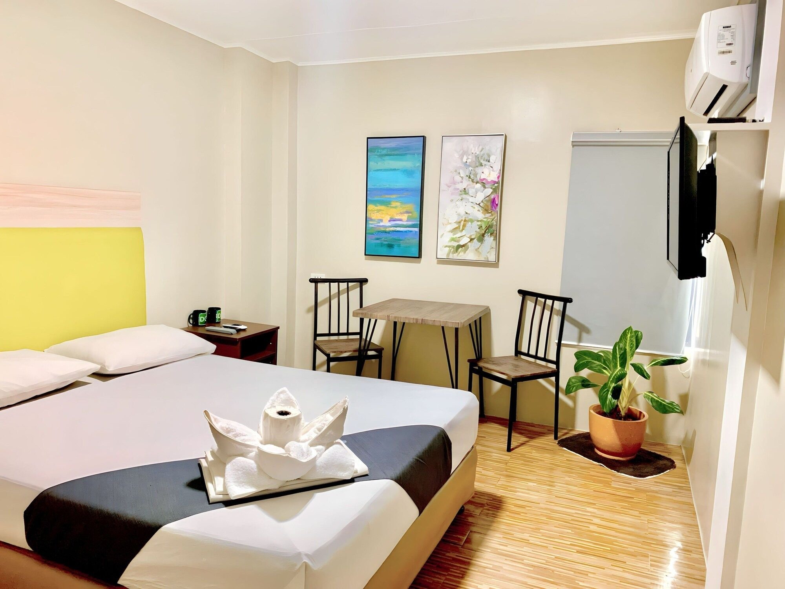

Lodging in Taniti
Taniti has a wide variety of lodging that ranges from an inexpensive hostel to one large, four-star resort. There are many small, family-owned hotels and a growing number of bed and breakfasts. All types of lodging are strictly regulated and regularly inspected by the Tanitian government.

Budget Hotel
Affordable, comfortable accommodations perfect for solo travelers and backpackers exploring the island.
Check Availability
Four-Star Resort
Taniti's premier luxury resort offering full amenities, beach access, and stunning views of Yellow Leaf Bay.
Check AvailabilityAdditional Options
Family-Owned Hotels
Experience authentic Tanitian hospitality at one of the island's many small, family-run hotels.
Check AvailabilityBed & Breakfast
A growing number of cozy bed and breakfasts offer a personal touch and home-cooked meals to start your day.
Check Availability